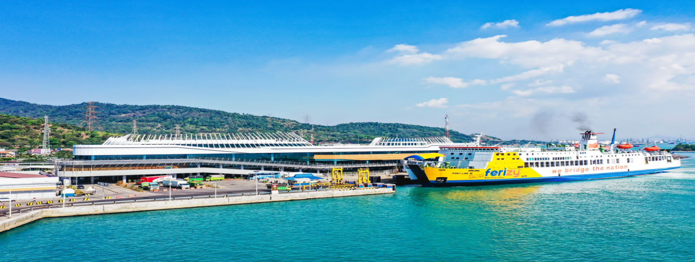
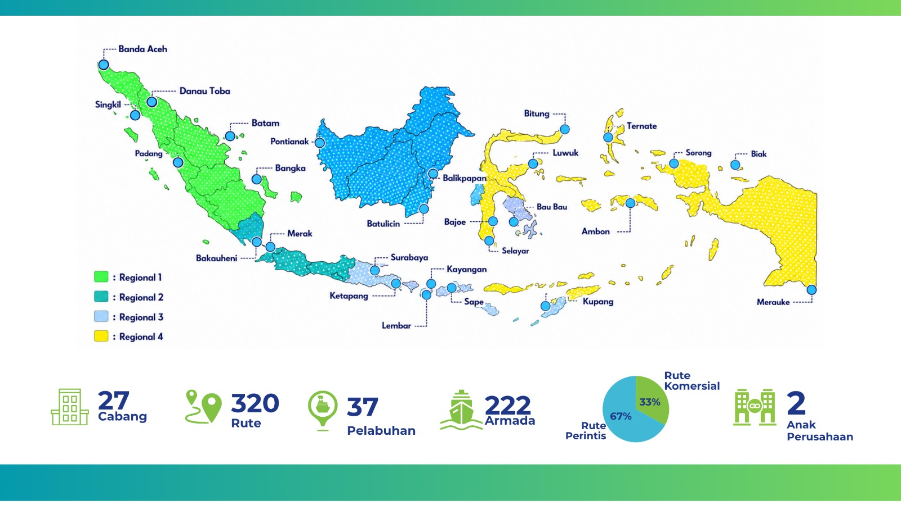

Portofolio Bisnis
Ekosistem Transportasi & Kepelabuhanan
Tiga pilar layanan utama PT ASDP Indonesia Ferry (Persero) dalam mendukung konektivitas nasional dan distribusi logistik.

Komersial & Perintis
Angkutan Penyeberangan Reguler
Melayani lebih dari 300 lintasan komersial dan perintis (wilayah 3T) di seluruh Nusantara untuk penumpang pejalan kaki, kendaraan pribadi, hingga logistik berat.

Layanan Premium
Layanan Dermaga Express
Pengalaman berlayar lebih cepat dengan ruang tunggu eksekutif ber-AC, garbarata, serta fasilitas komersial terpadu di Terminal Sosoro (Merak) dan Anjungan Agung (Bakauheni).

Kepelabuhanan
Jasa Kepelabuhanan & LDF
Pengelolaan 37 pelabuhan penyeberangan, layanan sandar kapal, terminal kargo, serta jalur Long Distance Ferry (LDF) lintas pulau jarak jauh.